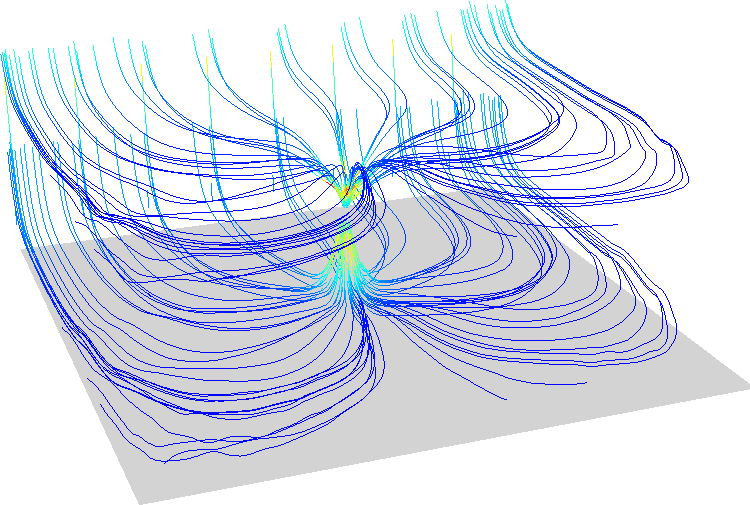

DESCRIPTION
Module r3.flow computes 3D flow lines and 3D flow accumulation.
It accepts either three 3D raster maps representing the vector field or one 3D raster map.
In case of one map, it computes on-the-fly gradient field.
Flow lines
Flow lines are computed either from points (seeds) provided in seed_points vector map,
or if there are no seeds, it creates seeds in a regular grid in the center of voxels (3D raster cells).
Parameter skip then controls the step between the regularly distributed seeds.
If skip is not provided, r3.flow decides optimal skip for each dimension based on current 3D region
as one tenth of the number of columns, rows, and depths.
Flow lines can be computed in upstream direction (in the direction of gradient or vector field),
in downstream direction or in both directions.
Flow accumulation
Flow accumulation is computed as the number of flow lines traversing each voxel.
Since the flow lines are computed for each voxel, the flow accumulation computation
can be more demanding.
Parameter skip does not influence the flow accumulation computation, parameter direction does.
Flow line integration
Flow line integration can be influenced by several parameters.
Option step controls the integration step and influences the precision and computational time.
The unit of step can be defined either in terms of the size of the voxel (3D raster cell),
length in map units, or as elapsed time.
Option limit specifies the maximum number of steps of each flow line.
Attributes
Without using flag a, no attribute table is created and each flow line
is represented by one vector line with one category. With a flag, an attribute table is created
and each category (record) represents one segment of a flowline, so that attributes
specific for segments can be written. In case of vector_field input, only velocity is written,
in case of input option, also values of the input 3D raster are written.
Option sampled allows sampling (query) given 3D raster by flow lines (computed from different 3D raster) and
write the values of the given 3D raster as attributes of the flow line segments.
Note that using a flag results in longer computation time, so consider increasing
step and max_error parameter.
NOTES
r3.flow uses Runge-Kutta with adaptive step size
(Cash-Karp method).
EXAMPLES
First we create input data using
example 1 from
r3.gwflow manual page:
# set the region accordingly
g.region res=25 res3=25 t=100 b=0 n=1000 s=0 w=0 e=1000 -p3
# now create the input raster maps for a confined aquifer
r3.mapcalc expression="phead = if(row() == 1 && depth() == 4, 50, 40)"
r3.mapcalc expression="status = if(row() == 1 && depth() == 4, 2, 1)"
r3.mapcalc expression="well = if(row() == 20 && col() == 20 && depth() == 2, -0.25, 0)"
r3.mapcalc expression="hydcond = 0.00025"
r3.mapcalc expression="syield = 0.0001"
r.mapcalc expression="recharge = 0.0"
r3.gwflow solver=cg phead=phead status=status hc_x=hydcond hc_y=hydcond \
hc_z=hydcond q=well s=syield r=recharge output=gwresult dt=8640000 vx=vx vy=vy vz=vz budget=budget
r3.flow vector_field=vx,vy,vz flowline=gw_flowlines skip=5,5,2 direction=both
r3.flow vector_field=vx,vy,vz flowaccumulation=gw_flowacc

We can store velocity values (and values of the input 3D raster map if we use option input) for each segment of flow line
in an attribute table.
r3.flow -a vector_field=vx,vy,vz flowline=gw_flowlines skip=5,5,2 direction=both
v.colors map=flowlines_color@user1 use=attr column=velocity color=bcyr

SEE ALSO
r.flow,
r3.gradient,
r3.gwflow
AUTHORS
Anna Petrasova, NCSU OSGeoREL, developed during GSoC 2014.